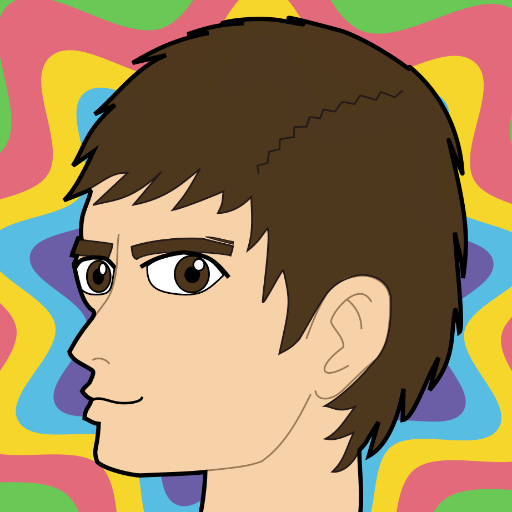

Buu342

Professional and hobbyist game developer, N64 homebrew developer since 2018. Moderator of the N64brew Discord server. Find out more of what I make by visiting my personal website!
Credits
N64brew Minigame Jam
Pyoro64
NetLib Examples
UNFLoader Examples